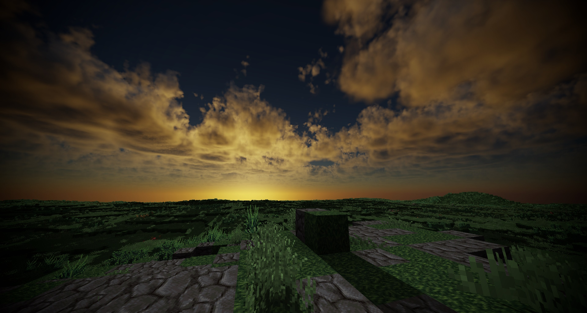
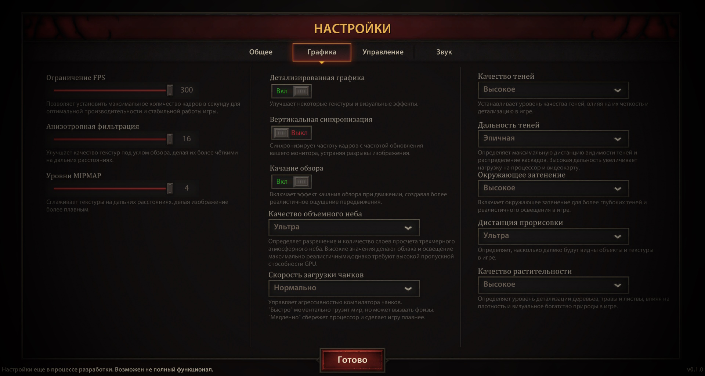
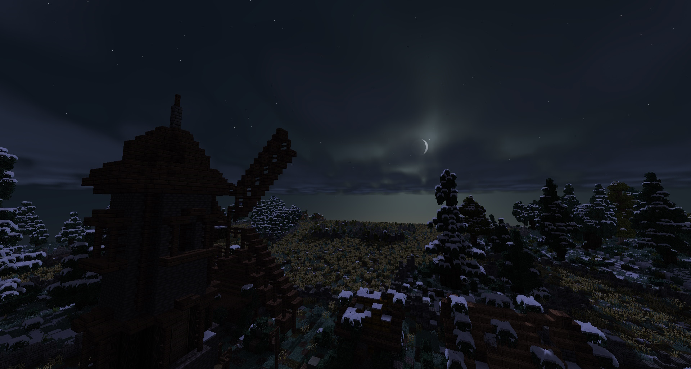

БОЛЬШЕ, ЧЕМ ПРОСТО ДВИЖОК
НЕКСТГЕН ГРАФИКА: ВОЛЮМЕТРИЧЕСКОЕ НЕБО
Мир дышит. Мы с нуля написали честное объемное освещение, систему многократного рассеивания света и реалистичные 3D-облака. Каскадные тени идеально ложатся на сложный рельеф, а погодные условия напрямую взаимодействуют с окружением, создавая неповторимую атмосферу темного фэнтези.

КАСТОМНЫЙ UI И МАТРИЧНЫЙ ИНВЕНТАРЬ
Никаких ванильных окон. Мы разработали абсолютно новый, минималистичный и строгий пользовательский интерфейс. Векторные шрифты STB сохраняют идеальную резкость на любых разрешениях, а классический матричный инвентарь заставит вас грамотно распределять место для ценного лута в рейде.

ДИНАМИЧНЫЕ БОИ (NON-TARGET)
Забудьте про тупое закликивание. Только точные уклонения, жесткие тайминги, парирования и контроль дистанции. Уникальный ИИ боссов ломает привычные тактики, меняя паттерны атак прямо в бою в зависимости от агрессии и поведения вашей группы.

ХАРДКОРНАЯ ЭКОНОМИКА И КРАФТ
Никакого мусорного лута, выпадающего тысячами. Девять тиров редкости от "Убогого" до "Божественного". Лучшую экипировку в игре нельзя выбить — её создают топовые кузнецы из редчайших ресурсов, добытых гильдиями в смертельно опасных локациях.